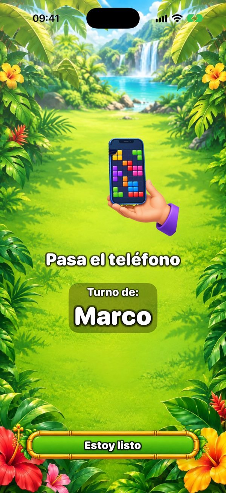
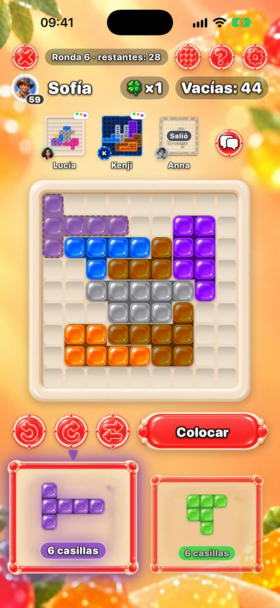
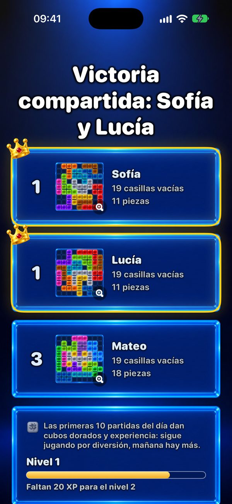

Un juego para jugar juntos en un solo teléfono
¿Buscas algo para jugar en familia con un solo teléfono? One More Chance es un rompecabezas que se pasa de mano en mano: cada uno llena su propio tablero de 9×9 con las mismas piezas, y gana quien deja menos casillas vacías.


¿Cómo se juega en un solo teléfono?
Cada ronda aparecen dos piezas. El primer jugador elige una y la coloca donde quiera en su propio tablero —las piezas se pueden girar y voltear— y pasa el teléfono. Una pantalla de «Pasa el teléfono» indica a quién le toca. Todos reciben las mismas dos piezas, así que la ronda es justa; solo cambia cómo crece cada tablero.

¿Cuántas personas pueden jugar?
Dos jugadores, gratis. Con Premium —una sola compra, sin suscripción— pueden jugar hasta seis personas en un teléfono o un iPad. Para un grupo grande, un iPad sobre la mesa es ideal.
¿Cada uno puede usar su propio teléfono?
Sí. Los jugadores cercanos se conectan por Bluetooth y Wi‑Fi —sin internet— y todos juegan a la vez, viendo arriba los tableros de los demás. Solo quien crea la partida necesita Premium para más de dos jugadores.

¿Quién gana?
Quien deja menos casillas vacías. Si ninguna pieza cabe, tomas «Otra oportunidad»: una pieza extra solo para ti. Un tablero perfecto, lleno por completo, es el gran objetivo.

¿Cuánto dura una partida?
Una partida tiene como máximo 20 rondas. Solo dura unos minutos; en grupo depende de cuánto piense cada uno, porque cada turno es una pieza. Con Premium puedes poner un tiempo por turno de 30, 60 o 90 segundos.
¿Para qué edad es?
En el App Store está clasificado para mayores de 13 años por el chat opcional con amigos y la publicidad. El juego en sí son piezas de colores en un tablero: sin violencia, sin prisas si no activas el temporizador, y no hace falta leer para colocar una pieza; los más pequeños pueden jugar junto a un adulto.
¿Es gratis? ¿Tiene anuncios?
El juego es gratis. Los anuncios aparecen solo entre partidas individuales, nunca en una partida con amigos, ni en un teléfono ni en varios. Premium quita los anuncios y suma seis temas más y hasta seis jugadores.
¿Hace falta internet?
No. En un solo teléfono y en varios teléfonos cercanos el juego funciona sin conexión. Internet solo hace falta para las mesas en línea, los amigos y la clasificación del Reto diario.
¿Noche de juegos hoy?
Gratis en iPhone y iPad. Pasa el teléfono y descubre quién deja menos casillas vacías.
Versión para Android, muy pronto.